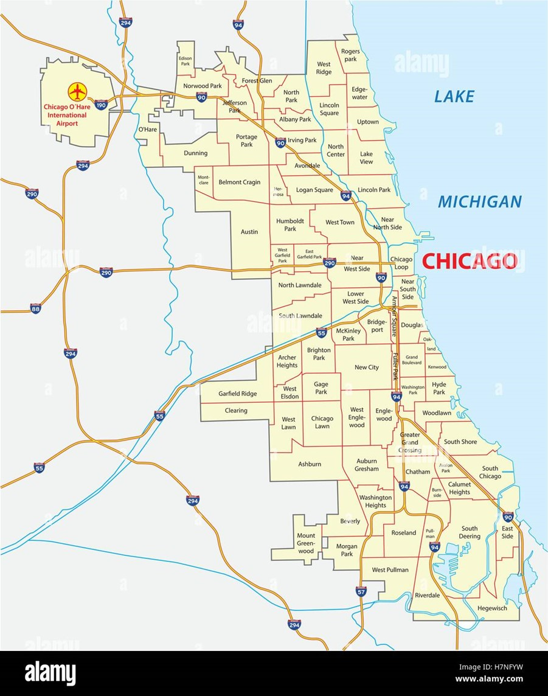

Alcance-Vision
Llegar a tener un buen campo laboral, especializándome en la carrera que elegí, de la cual estaré aprendiendo y ejerciendo al finalizar la carrera, quiero llegar a formarme profesionalmente y a aprender de otros campos importantes que también componen esta carrera. Dónde se dé un total conocimiento de la carrera donde haya ayudado resolver dudas sobre la carrera hice de una total expansión del tema ser un comunicador social totalmente exitoso y con un proyecto terminado y completo que ayude a la pedagogía de la carrera.
Al finalizar esta carrera me gustaría centrarme en como informar a la sociedad de una manera correcta, mostrando noticias importantes de interés social.
Apuntaría por conseguir un excelente trabajo en una buena cadena de televisión, buscando que esta tenga todo lo que un comunicador social desea, oportunidades, buen ambiente de trabajo, apoyo empresarial, información verídica. Para finalizar lograr ser un comunicador social importante logrando así mostrar credibilidad a las personas. Pero siempre buscando una ambición más alta con expectativas llenas donde con todo lo aprendido se pueda mejorar y conseguir algo mejor siendo un profesional óptimo y con una visión y misión exitosa y con crecimiento. 